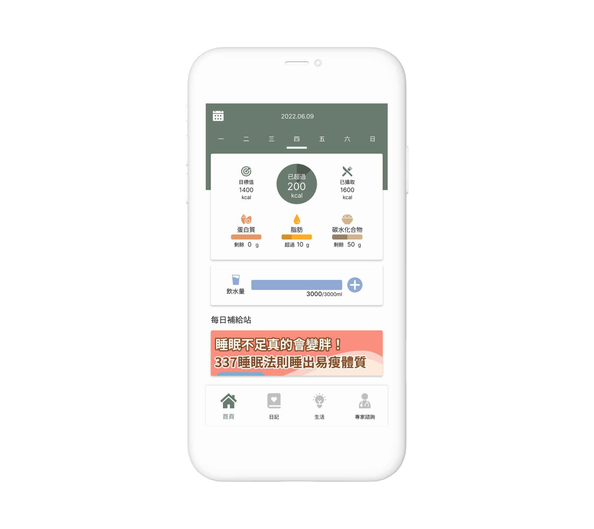
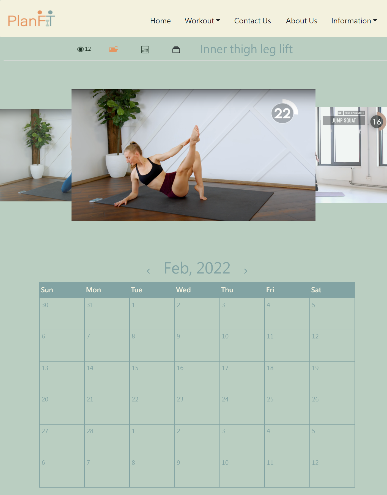
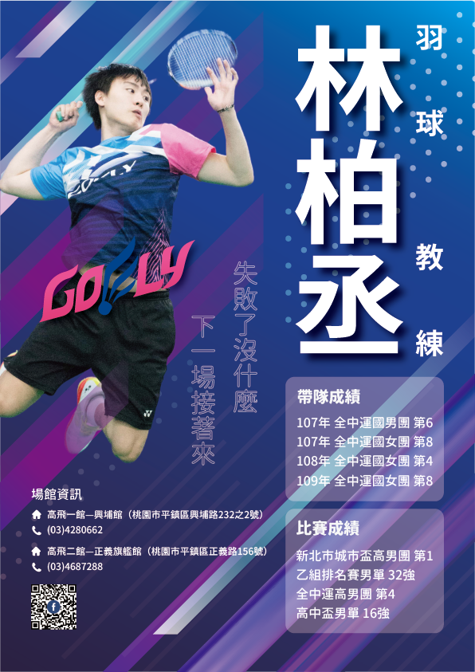
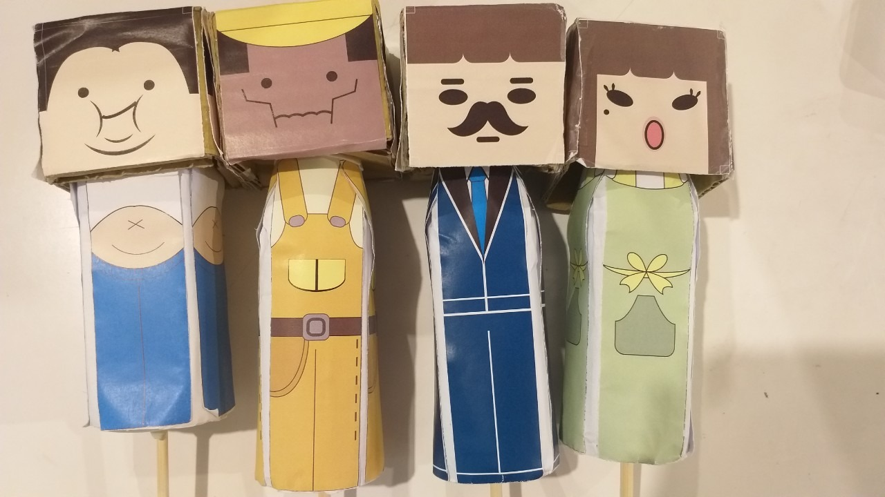
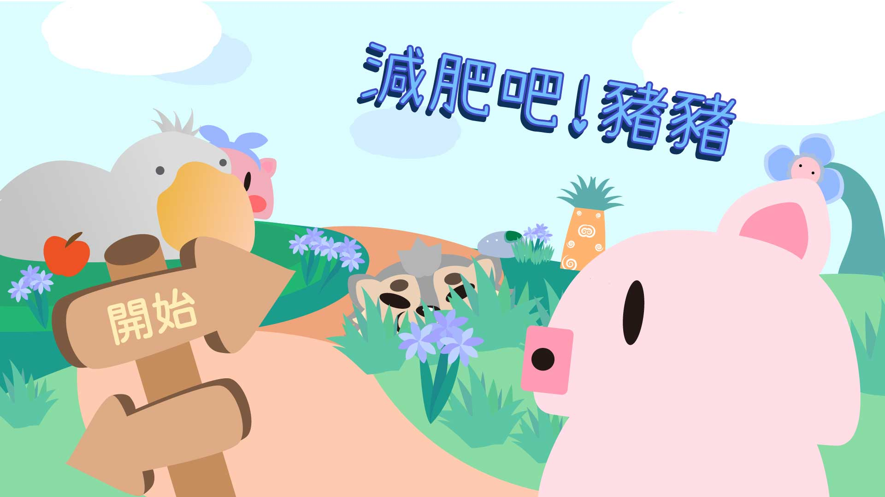

需求梳理
從使用者、目標與情境出發，找出真正需要被解決的問題。
專案管理 PM｜應徵作品集
我是蔡易辰，畢業於元智大學資訊傳播學系。從課程開發、教學現場到 UI／UX 專案，我持續練習理解不同角色的需求，將複雜資訊轉成清楚、可溝通的流程與介面。
我能帶來的價值
從使用者、目標與情境出發，找出真正需要被解決的問題。
運用使用者旅程、服務藍圖與資訊架構，讓流程更清楚。
以簡報、規格與可視化內容，協助不同角色建立共識。
PM 能力
通用 PM 核心能力
在 UI／UX 專案中運用 Persona、使用者旅程與服務藍圖，練習從不同角色的目標與痛點整理出系統流程。
課程開發經驗培養我把內容轉成教案、簡報與學習單；重點不只是寫完，而是讓下一位使用者看得懂、接得上。
我持續累積 PM 的實務方法；能帶著需求理解、資訊整理與協作習慣，快速熟悉不同產業的專案制度、工具與領域知識。
我的工作方式
精選作品
以下專案皆為大學期間的團隊作品；我聚焦呈現自己參與的需求釐清、使用者洞察、資訊架構與介面設計。
介面與使用者體驗

飲食紀錄與健康管理 APP
查看專案介紹 →
兒童程式學習 APP
查看專案介紹 →
個人健身計劃網站
查看專案介紹 →視覺傳達與活動宣傳

球館宣傳與校隊徵選視覺
查看專案介紹 →世界觀、角色與場景創作

角色、場景與實體成果創作
查看專案介紹 →
遊戲角色、場景與介面美術
查看專案介紹 →聯絡我
感謝您閱讀我的作品集。我期待在各類專案實務中持續精進需求分析、流程規劃、進度推進與跨團隊協作能力。
留下訊息
填寫後即可直接送出，資料會安全寫入聯絡訊息系統。